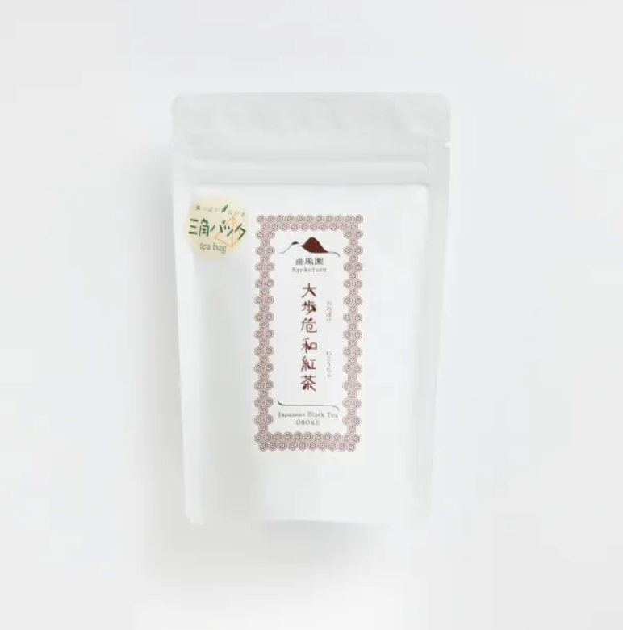
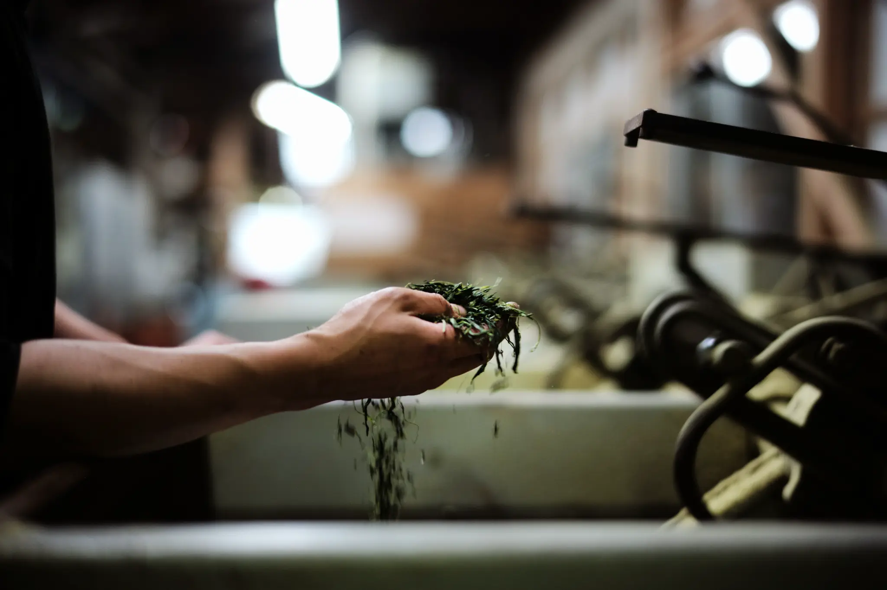

The Young Heir’s Return Home

His name is HIROKI MAGARI — the third-generation successor of Kyokufuen. Tea-making has been a part of his life since birth. When May arrives, the new tea harvest keeps everyone busy, and as a student he helped every day. To be honest, at the time the work was so demanding that he often resented it. He once left his hometown and worked in the automotive industry, and his parents told him he didn't have to take over. Yet at 23 he returned to inherit the family business. He believed that to truly understand tea’s flavor, one must train the palate and the nose while they are still young and sharp.
A 'New Approach' to Survive — Wakocha that Honors the Leaf’s Vitality

The years after his return—adjusting to an unfamiliar life and a rhythm of work that follows the mountains through the year—made him deeply aware of how hard it is to preserve tradition. But he felt that “we won't survive unless we try something new. Only through challenge can culture be passed to the future.” So rather than simply preserving old methods, he embarked on a new experiment to make the most of the leaf’s life. After producing sencha from the spring's first flush, he used the slightly less vigorous summer second flush—gently wilting the leaves and patiently rolling them to oxidize by traditional hand methods—to create the superb Oboke Wakocha.
Passing on Craftsmanship

HIROKI MAGARI is, in a sense, a tea sommelier. He holds the country's highest tea appraisal rank — Cha Shinsa Gijutsu (9th Dan) — and is a certified Nihoncha Instructor. Combining the artisan lineage passed down from his parents with a refined eye for quality and contemporary, innovative marketing, he now organizes events to bring people back to the region and even draws visitors who come specifically to sip tea amid spectacular terraces. The seed of craftsmanship quietly nurtured in Japan’s remote corners has taken root, and its influence is now spreading across the country.